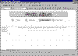
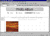

| ||||
On the third page in your FrontPage-based Web site, you will insert two images -- one of a sunset, and one of a metropolitan city skyline. Images add decoration and personality to your Web pages and can be imported from a variety of popular graphics file formats.
The Open dialog box is displayed.
The Photo Album page is displayed in the FrontPage Editor.
When the Photo Album page is opened in the FrontPage Editor, note the page elements that have been applied by the FrontPage theme.
Your page should now look like this:

Click image to enlargeFigure 1. Editing the Photo Album page
Next, you will add two images to the page.
The Image dialog box is displayed. In this dialog box, you can select an image to be inserted from the current FrontPage-based Web site, from another Web server, from a scanner, from the Microsoft Clip Gallery, or from your local file system.
Figure 2. The File button
The File button lets you browse your local file system for an image to insert. For this exercise, the image file you want to insert is named sunset.gif.
C:\Program
Files\Microsoft FrontPage\tutorial\
If you changed the default installation drive or folder during FrontPage Setup, you will need to adjust the path accordingly.
The photograph of a sunset is placed on the page.
Your screen should now look like this:

Click image to enlargeFigure 3. Adding a photo to the page
Now repeat steps 1 - 5 in the previous exercise to insert the second image, which is named city.gif. This image is also located in the C:\Program Files\Microsoft FrontPage\tutorial\ folder.
Figure 4. The Save button
Did you find this material useful? Gripes? Compliments? Suggestions for other articles? Write us!
© 1999 Microsoft Corporation. All rights reserved. Terms of use.